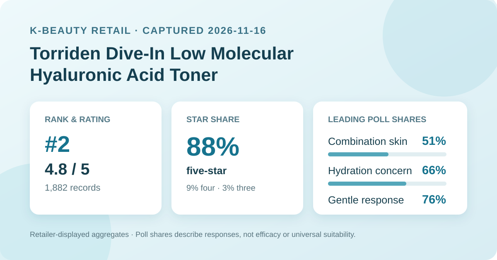
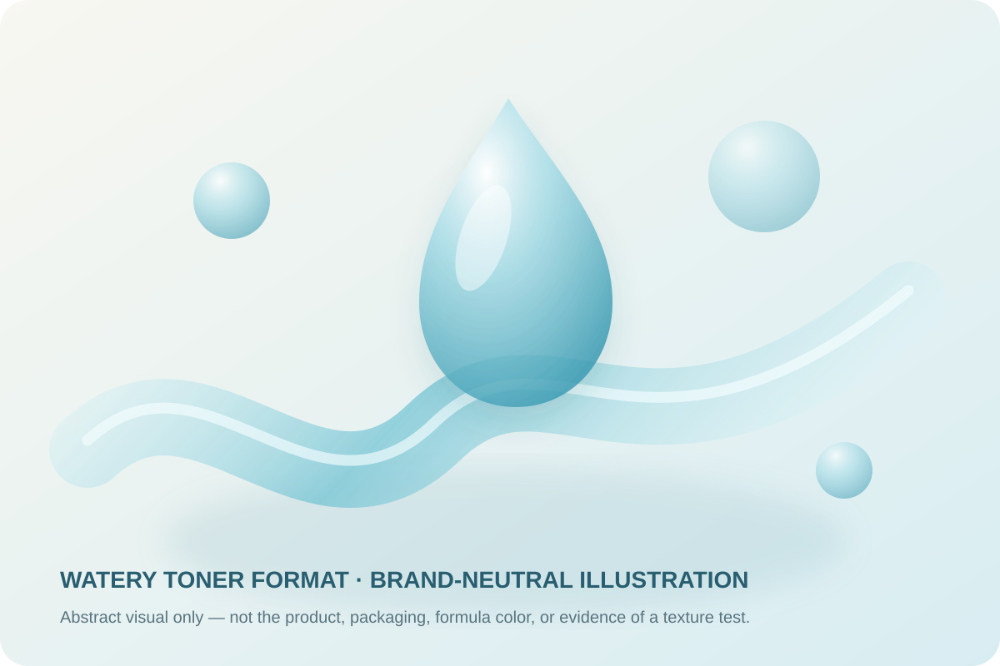

Data captured November 16, 2026. A Korean K-beauty retail platform displayed the title “토리든 다이브인 저분자 히알루론산 토너 300ml 기획 (+100ml)”; this article uses “Torriden Dive-In Low Molecular Hyaluronic Acid Toner” as a readable English label. It uses only the retailer's title, rank, aggregate rating, star shares, displayed shopper polls, and anonymous automated themes. It does not copy or translate individual review text, names, or photos, and it makes no claim of firsthand use.

The short version: Torriden Dive-In Low Molecular Hyaluronic Acid Toner appeared at number 2 in the captured skincare sales ranking. The ranking and detail title matched, while both the product header and official review view displayed 4.8 out of 5 from 1,882 records. Five-star ratings accounted for 88% of the shown distribution. Combination skin led the skin-type poll at 51%, hydration led the concern panel at 66%, and gentle led the irritation panel at 76%. These are retail signals, not proof of hydration, soothing, ingredient performance, or universal tolerance.
The captured official statistics showed an average of 4.8 stars from 1,882 review records. That is a meaningful retail-feedback base for describing the direction of ratings on this listing at one moment. It supports the narrow observation that the displayed feedback leaned strongly favorable. It does not turn the average into a clinical score, a probability of satisfaction, or a forecast for one person's skin.
A storefront review base is shaped by who purchased, who chose to post, which orders were eligible, how promotions and rewards operated, how linked options were combined, and how records were moderated. The captured interface did not fully disclose those mechanisms. The count can also change quickly after publication, so the capture date belongs beside the number rather than treating 1,882 as permanent.
The ranking listing was a 300 ml toner plan with an additional 100 ml bottle. The page did not establish whether every linked review concerned that exact pack size and gift configuration. The aggregate is useful at listing level, but it should not be read as a separately audited evaluation of each bundle component.
The displayed star shares were 88% five-star, 9% four-star, 3% three-star, 0% two-star, and 0% one-star. The rows total 100% at the platform's whole-number precision.
The 88% five-star row is the clearest positive signal. The combined four- and three-star shares show that the display was not literally unanimous. Zero-percent lower rows do not establish that negative experiences are impossible: a whole-number interface can round a small share down to zero, and the platform did not expose the raw number behind each row.
Star ratings may reflect price, packaging, quantity, promotional gifts, delivery, expectations, or campaign timing alongside impressions of the formula. The 4.8 average cannot isolate the effect of a toner base, one named ingredient, or the additional bottle included in the plan.
The skin-type poll showed 51% combination, 33% dry, and 15% oily. The displayed rows total 99%, which is consistent with whole-number rounding. Combination respondents formed the majority of the visible panel, while dry respondents made up about one-third and oily respondents a smaller but still visible group.
Those proportions describe poll representation, not comparative performance. The interface did not expose the poll denominator, response rate, or a standardized method for classifying skin. Self-reported skin type can also shift with season, climate, cleansing, medication, hormones, and current irritation. The 51% combination share is not proof that the toner works best for combination skin, and the 15% oily share is not evidence against oily skin.
The concern poll displayed 66% hydration, 33% soothing, and 1% wrinkle or brightening. The careful reading is that hydration was the dominant response label and soothing was the secondary label in this listing's poll.
The 66% figure is not a corneometer result, transepidermal-water-loss measurement, duration test, or controlled before-and-after comparison. It does not show how much moisture changed, how long an effect lasted, or whether the toner caused the response. Similarly, the 33% soothing share is not a redness score, inflammatory marker, or evidence that the product treats irritation, acne, dermatitis, or another medical condition.
The irritation panel showed 76% gentle, 23% ordinary, and 1% felt irritation. Gentle was clearly the largest response, but almost one-quarter selected the ordinary category and the irritation row was not zero.
This panel cannot predict an individual's tolerance. It does not screen for allergy, active dermatitis, a compromised barrier, prescription use, or interactions with exfoliants, retinoids, acne treatments, fragrance, and other routine steps. “Gentle” is an aggregate shopper label, not a medical safety evaluation. The 1% row also does not disclose severity, timing, cause, duration, or whether another product was involved.
The retailer's automated summary labeled 91% of its undisclosed recent-review subset as positive. It grouped discussion into three broad themes: mild-feeling use, light hydration without a heavy or sticky finish, and the practical value of a large bottle that shoppers used in more than one toner routine. These are paraphrased aggregate labels only; no individual sentence, reviewer identity, or photograph is reproduced.
The platform did not reveal the summary's sample size, selection window, language model, error rate, or how mixed comments were classified. The themes therefore help describe what the automated system found salient, but they do not establish ingredient safety, sensory behavior for everyone, value at a future price, or a measured skin outcome. A 91% label for a recent subset should not be confused with the 88% five-star share across the full displayed distribution.

The retailer identifies the main item as a toner. In general skincare language, toner is a leave-on liquid used after cleansing and before thicker serums, lotions, or creams. Some people pour it into their hands, others use a pad, and some apply multiple thin layers. That category-level description does not verify this product's viscosity, slip, tack, fragrance, absorption speed, finish, pilling behavior, or compatibility with sunscreen and makeup.
I did not open, smell, spread, layer, or wear the formula. The local illustration uses abstract vector shapes and does not reproduce the product, bottle, formula color, or a real texture. Sensory behavior depends on the current formula, amount, application method, skin condition, earlier steps, temperature, humidity, and what follows.
“Low Molecular Hyaluronic Acid” is part of the retailer-displayed product name. The name alone does not verify the amount of hyaluronic acid, the number or identity of derivatives, the molecular-weight ranges, their ratio, stability, delivery, or performance in the finished formula. This analysis does not estimate a percentage or molecular profile from the name, marketing language, product imagery, or review sentiment.
The rating and polls also cannot isolate a mechanism. No ingredient assay, penetration measurement, hydration instrument reading, barrier test, or controlled formula comparison was available. Readers who need current ingredient or allergy information should check the package or brand's current regional disclosure rather than treating this ranking snapshot as a formula audit.
Rank 2 describes one moment in a Korean K-beauty retail platform's skincare sales list. It is not a quality score, clinical ranking, or declaration that this is the second-best toner. Promotions, added volume, advertising, inventory, seasonality, and short-term demand can move a listing.
The captured page displayed a 300 ml toner plan with an additional 100 ml bottle, a ₩21,000 reference price, and a ₩15,700 promotional price. Those details can change independently of the review data. Before buying, confirm the current formula, seller, exact sizes, gift conditions, stock, expiry information, return terms, and checkout price on the live listing.
Torriden Dive-In Low Molecular Hyaluronic Acid Toner was the first distinct unpublished product after the covered rank-one AESTURA cream configuration. Its captured storefront snapshot is internally coherent: rank 2, a 4.8 average across 1,882 records, 88% five-star, a 51% combination-skin share, a 66% hydration response, a 76% gentle response, and a 91% positive label in an undisclosed recent-summary subset.
The responsible conclusion stops at description. The data does not prove hydration, soothing, low-molecular delivery, barrier repair, or universal tolerance. Its best use is to understand the direction and composition of retailer feedback while keeping the moving count, rounded display, unknown poll denominators, bundle context, visible ordinary and irritation rows, automated-summary limits, and lack of controlled measurements in view.
The captured official statistics showed 4.8 out of 5 from 1,882 records. The displayed star shares were 88% five-star, 9% four-star, 3% three-star, and 0% each for two- and one-star.
Combination skin led at 51%, followed by dry at 33% and oily at 15%. That describes representation, not proven suitability.
No. It is a rounded shopper-poll response, not a controlled instrument measurement or durability test.
No. The panel cannot predict allergies, sensitivity, routine interactions, or individual tolerance.
No. The analysis uses retailer-displayed aggregates only and does not claim firsthand use.
Source: Olive Young Korea product listing for Torriden Dive-In Low Molecular Hyaluronic Acid Toner, captured November 16, 2026. Rank, price, availability, gifts, counts, percentages, and listing details can change after capture.
Published by The K-Beauty Data Desk. This is an editorial analysis of retailer-displayed aggregates, not medical advice or a substitute for the current product label.
← All reviews · Review-volume rankings · Skin-poll explorer · Methodology